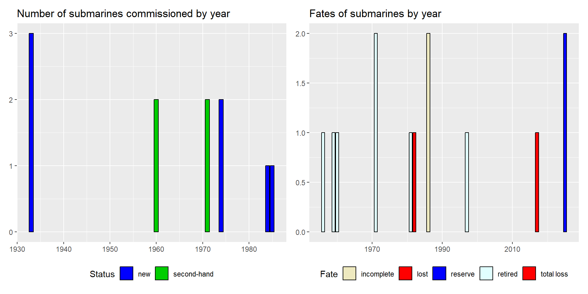
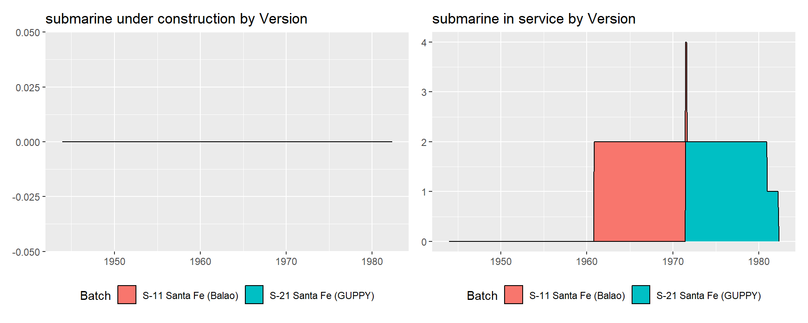
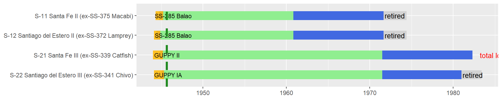

Argentina
2024-07-12
Argentina is a South American country of 46,1 million people, with a long coastline along the Southern Atlantic Ocean. Furthermore it shares control of the strategic cape of Good Hope with neighboring Chile. It Officially declared independence from Spain in 1816, and has at times one of the most powerful navies regionally. Once a wealthy country, the Argentina has gone through severe financial downturns in the later half of the 20th and early 21st centuries, which has impacted it’s navy.
Argentina’s navy dates back from independence, but within the time frame of it’s submarine operations, we can define four periods of growth of the overall navy, which is reflected in it’s submarine force. First, in the 1920s and 1930s, Argentina sourced many new warships from Italy, the United Kingdom, and Spain (3 cruisers, 13 destroyers, and 3 submarines), which with 2 battleships and 4 destroyers from the 1910s gave Argentina the most powerful navy in Latin America by the start of World War 2. However, being neutral during the conflict, with Axis sympathies, meant Argentina did not receive the material help of other South American countries (namely Brazil), meaning that by 1945 all these ship, though not very old for some of them, were outdated in terms of equipment (radar, sonar, weaponry). To add to these issues, whereas Brazil had developed indigenous shipbuilding during the war, Argentina barely tried (with the construction of 2 corvettes and a few minesweepers), making it still entirely reliant on foreign imports for major fleet units. The next period of growth from the late 1940s to early 1970s was entirely composed of second-hand but modernized World War 2 warships from the United States, the United Kingdom, and Canada (2 aircraft carriers, 2 cruisers, 9 destroyers, 4 frigates, 1 corvette, and 4 submarines) whilst building 2 more corvettes locally. The third period came in the late 1970s and 1980s when Argentina sourced newly built and modern equipment again from Germany, France, and the United Kingdom (2 missile destroyers, 4 missile frigates, 3 missile corvettes, and 4 submarines). Another 2 submarines and 6 corvettes of German design were to built locally, however by the mid 1980s the financial situation deteriorated and the 2 submarines were cancelled, with 2 of the corvettes being postponed until finally resumed in the early 2000s. The Falkland war in 1982 also delayed some deliveries of modern equipment due to embargoes. The last and current period of growth of the Argentinian navy reflects the current economic limitations and now mostly peaceful relationship with other regional powers (Brazil, Chile), and only includes 4 new modern ocean patrol vessels from France.
In all Argentina has almost nearly continuously submarines operated since 1933, with a total of 11 submarines (3 modern Italian in 1933, 4 second-hand from the United states in the 1960s and 1970s, and 4 modern German ones in the 1970s and 1980s). Of the 4 newer submarines, only 2 currently remain as docked training ships with no replacement in sight in the near future. Thus Argentina does not have a functional submarine fleet since 2020. During it’s history, 2 submarines have been lost. One Gato submarine was hit by British helicopters and grounded during the Falkland war in 1982, and one of the most modern TR1700 submarines was lost in an accident in 2017.
Submarines operated by Argentina

Individual submarines by class
Specification summaries
Settembrini class
These 3 submarines are related to the Settembrini group of Italian medium ocean-going submarines built during the 1920s to World War
| Version | Boats | Number | Displacement | Propulsion | Power | Fuel | Speed | Range | Depth | |
|---|---|---|---|---|---|---|---|---|---|---|
| 6 | Group 05 Settembrini | all | 3 | 935/1155t | diesel-electric | 3000/1400hp | 90t | 17.5/9kts | 7100/80nm | 80m |
| Version | Boats | Year | Torpedo_text | Gun_text | |
|---|---|---|---|---|---|
| 6 | Group 05 Settembrini | all | 1933 | 8x533mm (12 torp) | 1x102mm L40 |
| 7 | Group 05 Settembrini | all | 1940s | 8x533mm (12 torp) | 1x102mm L40 + 1x40mm L56 |

Balao class
The US provided 4 Balao submarines in two batches. A first in 1960 unmodernized, and a second in 1971 with GUPPY modernization. One was lost during the Falklands war
| Version | Boats | Number | Displacement | Propulsion | Power | Fuel | Speed | Range | Depth | |
|---|---|---|---|---|---|---|---|---|---|---|
| 7 | SS-285 Balao | all | 2 | 1845/2415t | diesel-electric | 5400/2740hp | 472t | 20.25/8.75kts | 11000/96nm | 120m |
| 8 | GUPPY II | GUPPY II | 1 | 1870/2440t | diesel-electric | 4610/5400hp | 472t | 18/16kts | 11000/96nm | 120m |
| 9 | GUPPY IA | GUPPY IA | 1 | 1830/2440t | diesel-electric | 4610/5400hp | 472t | 18/15kts | 11000/96nm | 120m |
| Version | Boats | Year | Torpedo_text | |
|---|---|---|---|---|
| 8 | SS-285 Balao | all | 1960 | 10x533mm (24 torp or 40 mines) |
| 9 | GUPPY II | GUPPY II | 1971 | 10x533mm (24 torp or 40 mines) |
| 10 | GUPPY IA | GUPPY IA | 1971 | 10x533mm (24 torp or 40 mines) |




Type 209
Argentina was one of the earliest adopter of the prolific Type 209 export submarine from Germany. These were of the Type 209/1200 version.
| Version | Boats | Number | Displacement | Propulsion | Power | Fuel | Speed | Range | Depth | |
|---|---|---|---|---|---|---|---|---|---|---|
| 10 | Type 209/1200 | all | 2 | 1140/1248t | diesel-electric | 2400/4500hp | 63t | 11.5/22kts | 6000/400nm | 250m |
| Version | Boats | Year | Torpedo_text | |
|---|---|---|---|---|
| 11 | Type 209/1200 | all | 1974 | 8x533mm (14 torp) |

Type TR1700
A very heavy modification on the type 209, these submarines were known for being the fastest conventional submarine of their time, a record they maintain today.
| Version | Boats | Number | Displacement | Propulsion | Power | Fuel | Speed | Range | Depth | |
|---|---|---|---|---|---|---|---|---|---|---|
| 11 | Type TR1700 | all | 2 | 2150/2356t | diesel-electric | 6720/8980hp | 319t | 15/25kts | 14000/460nm | 300m |
| Version | Boats | Year | Torpedo_text | |
|---|---|---|---|---|
| 12 | Type TR1700 | all | 1984-85 | 6x533mm (22 torp) |